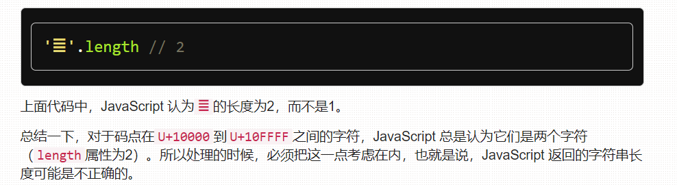

1、封装函数
functinon createSpan(textContent) {
var span = tag('span',{className:'text',textContent:textContent});
return span
}
var span = createSpan('xxx')//调用此代码可以直接创建一个内容是“xxx”的span标签并且class是text。
动态获取用户当前页面的宽高的API
var pageWidth = document.documentElement.clientWidth;
var pageHeight = document.documentElement.clientHeight;
canvas.width = pageWidth;
canvans.height =pageHeight;
2、数据类型
1、数值（number）
var a = 011 // a ===9 0开头代表8进制
var b = 0b11// a===3 0b开头代表2进制
var c = 0x11// a===17 0x开头代表16进制
2、字符串（string）

3、布尔值
true or false
4、symbol
用来生成一个全局唯一的值
5、6、 undefined 和 null
null和undefined都表示没有值，一般来说
1、若一个变量没有赋值， 例如：var a； 则a的值就是undefined
2、若创建一个对象，没有赋值，那么 var obj = null
3、若一个number 、string不想赋值 ,则参考第一条。
7、对象（object）
前面5种是简单类型或基本类型，对象是合成类型
对象可分为:
1、狭义的对象
2、数组
3、函数
例如：var person = { name: 'das',age:18}
for(var key in person){
console.log(person[key]);//console.log(person.key)
}
当你console.log( person.key)和console.log(person[key])，person.key代表person里有一个键名为key的属性，key被当作字符串，会出现undefined。而且数值键名也不能用点，会被当作小数点。
obj.123 //报错
只能用person[key]来表示，因为使用方括号运算符时key会被当作变量来处理。
bug1：typeof null //object
but2: typeof function //function ,function也是object的一种，但function有自己的原型
{foo:123}，javascript理解为语句（即代码块）
({foo:123})，JavaScript理解为对象
在eval语句（作用是对字符串求值）中
eval(‘{foo: 123}’) // 123
eval(‘({foo: 123})’) // {foo: 123}


3、数值
1.JavaScript里不要直接比较小数，因为浮点数不是精确的值

2、JavaScript对15位的十进制整数都可以精确处理，但是大于15位就不行了
3、以下两种情况，JavaScript会自动将数值转为科学计数法表示
（1）小数点前多于21位

(2)小数点后的零多于5个

4、字符串
若字符串要换行的话，可以这样：重点是\后只能加回车，不能有任何空格。
1 'a\
2 b\
3 c'
4 //'abc'
5、数组
概要：数组本身是对象，是一种特殊的对象
1.length
数组不能用点结构读取：

JS用32位整数保存数组的长度，所以数组最多只能存2^32-1个数， length的值是可以控制了，length = 0 会直接清空数组。

length的长度是可以设置的，若length大于原来的值，则多出来的叫空位，读取空位会返回undefined，用in遍历的是时候会是false


当添加不合法的数字键时，这些不合法的数字键会默认转换成为字符串，变成KEY


2、forEach遍历
用length遍历数组时，会把空位输出为undefined，但使用数组的forEach方法、for…in结构、以及Object.keys方法进行遍历，空位都会被跳过，只有当数组的值是undefined时，它们才会输出undefined，所以用length遍历数组时要小心空位

3、delete
delete命令会可以删除数组中的值，但是不会删除KEY ，这个位置会形成空位。并且对length没有影响